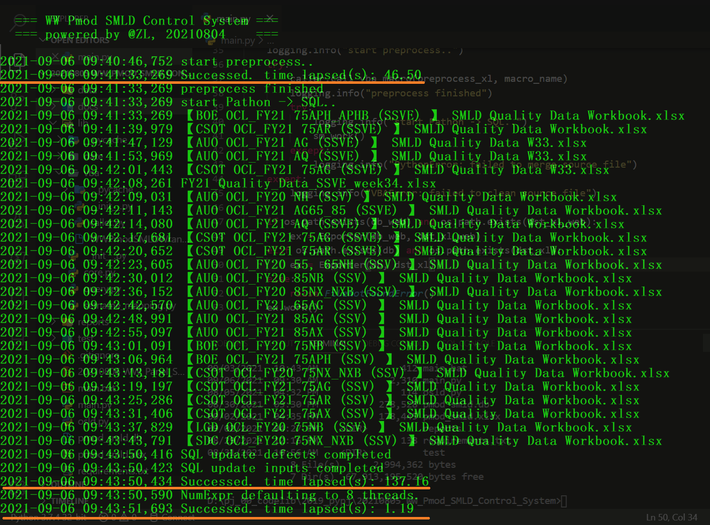

This project builds, maintains a database, and monitors SSVE Pmod performance by week.
It minimizes significant labor hours, eliminates human errors and speeds up the whole process.
This project makes monitoring WW Pmod SMLD Quality in real time possible.
SSVE TVQA member @Zhang Liang, 20210804
main.py by using main.bat (Batch script)Builder design pattern
C:.
│ .gitignore
│ 20210806 WW_Panel_SMLD_Database v0.02.pptx
│ main.bat
│ main.py
│ requirements.txt
│
├─data
│ ├─CTTI
│ │ 【BOE OCL_FY21 75APH_APHB (SSVE) 】 SMLD Quality Data Workbook.xlsx
│ │ ...
│ │
│ ├─FBC
│ │ 【AUO OCL_FY21 AG (SSVE) 】 SMLD Quality_W49.xlsx
│ │ ...
│ │
│ ├─FSK
│ │ FY21_Quality_Data_SSVE_week50.xlsx
│ │
│ ├─INZ
│ │ 【AUO OCL_FY20 NH (SSV) 】 SMLD Quality Data Workbook.xlsx
| | ...
│ │
│ └─SOEM
│ 【AUO OCL_FY20 55, 65NH (SSV) 】 SMLD Quality Data Workbook.xlsx
│ 【AUO OCL_FY20 85NB (SSV) 】 SMLD Quality Data Workbook.xlsx
| ...
│
├─docs
│ design.png
│ DevelopManual.html
│ DevelopManual.md
│ DevelopManual.pdf
│ info.text
│ performance.png
│ smld_db.drawio
│ smld_db.png
│ SQL.png
│
├─lib
│ │ core.py
│ │ __init__.py
│ │
│ ├─config
│ │ config.py
│ │ setname_mapping.py
│ │ __init__.py
│ │
│ ├─query
│ │ query.py
│ │ __init__.py
│ │
│ ├─smld
│ │ smld.py
│ │ __init__.py
│ │
│ ├─utility
│ │ types.py
│ │ utils.py
│ │ __init__.py
│ │
│ └─vba
│ caller.py
│ SmldWrangler.xlsm
│ __init__.py
│
├─reports
│ pmod_smld_viz_v0.09.xlsm
│
└─test
cleaned_headers.py
df_replace.py
ext.py
field_names.py
mon.py
There was an impact to performance when using Python to clean "inputs" data in source files;
After built a VBA class API to preprocess the clean operation, the impact is alleviated;
VBA preprocess class API to do basic data cleaning;Python + Pandas to build a DataFrame Merger API to wrangle the preprocessed source files with split control: "defects", "inputs";SQL to control all data entries and poka-yoke duplicate entries;SQL database to excel "pmod_smld.xlsx" with unique columns for further data visualization;VBA to visualise pmod smld data;The average run time of whole process is around 3 minutes.
=> Performance: 184 seconds

Option Explicit
Private Sub CPModWrangler()
Dim FSO As New FileSystemObject
Dim srcWB As Workbook
Dim plant As String
Dim rv As Variant
Dim cpw As New CPModWrangler
Dim subDir As Scripting.Folder
Dim srcFile As Scripting.File
Const tmp_flag As String = "~$"
Const xl_flag As String = "xls"
Dim root As String
root = FSO.GetParentFolderName(FSO.GetParentFolderName(ThisWorkbook.path)) & Application.PathSeparator & "data"
If root = vbNullString And Not FolderExists(root) Then
MsgBox "DirNotFound", vbInformation, "NotFoundError"
Exit Sub
End If
FastMode True
'On Error Resume Next
For Each subDir In FSO.GetFolder(root).SubFolders
For Each srcFile In FSO.GetFolder(subDir).Files
If InStr(srcFile.name, tmp_flag) < 1 And InStr(srcFile.name, xl_flag) > 1 Then
Set srcWB = GetObject(srcFile)
rv = Split(srcWB.FullName, Application.PathSeparator)
plant = rv(UBound(rv) - 1)
cpw.init srcWB, plant
cpw.clean
Set srcWB = Nothing
End If
Next
Next
Set FSO = Nothing
FastMode False
End Sub
Using Python to read all preprocessed files, and clean DataFrame further;
def main()->None:
smld = Smld(
fix_defects_setname=common_defects_setname, fix_defects_setname_mapping=common_defects_setname_mapping,
fix_inputs_modelname=common_inputs_modelname, fix_inputs_modelname_mapping=common_inputs_modelname_mapping,
fix_inputs_fy=common_inputs_fymod, fix_inputs_fy_mapping=common_inputs_fymod_mapping,
)
b = Builder(folder, db_web)
b.smld = smld
d = Director()
d.builder = b
logging.info("start preprocess..")
try:
caller.call_vba_macro(os.path.abspath(preprocess_xl), macro_name)
logging.info("preprocess finished")
try:
logging.info("start Python -> SQL..")
d.start()
except:
logging.info("PythonError: failed to merge source file")
except:
logging.info("VBAError: failed to clean source file")
if os.path.exists(db_web):
ex = query.Exporter(db_web, dst_xl_web)
ex.work()
else:
if os.path.exists(db):
ex = query.Exporter(db, dst_xl)
ex.work()
else:
raise FileNotFoundError()
The project itself is a well-tested console application.
User may utilize Python to interact with "pmod_smld.db";
import sqlite3
def dml(db:Path)->None:
with sqlite3.connect(db) as conn:
cur = conn.cursor()
...
User may write the following command to run this application if user is familiar with Batch;
Either user may click "main.bat" to achieve same effect;
@echo off
cd "root of this procject directory"
python main.py
If user was familiar with SQL, user should use SQLite3 Studio to link "pmod_smld.db".
SELECT * FROM defects
WHERE TVPlant = "FSK" AND ConfirmationWC = 2132 AND Classify = "Line"
LIMIT 10;

If user was familar with Excel, user could use Excel application to manipulate data as well;
Public Sub load_src()
''' load source data from a given workbook @ZL, 20210825
Dim beg As Single: beg = Timer
Dim dstWB As Workbook: Set dstWB = ThisWorkbook
Dim strSRC As String: strSRC = GetFilePath(ThisWorkbook.path)
If Not FileExists(strSRC) Or strSRC = vbNullString Then
Exit Sub
End If
Dim srcWB As Workbook: Set srcWB = GetObject(strSRC)
Const wsn_defects As String = "defects"
Const wsn_inputs As String = "inputs"
Dim srcDefects As Worksheet, srcInputs As Worksheet
Dim dstDefects As Worksheet, dstInputs As Worksheet
If (Not WSExists(srcWB, wsn_defects)) Or (Not WSExists(srcWB, wsn_inputs)) Then
MsgBox "WSNotFoundError", vbInformation, "WorkSheetError"
Exit Sub
End If
Set srcDefects = srcWB.Worksheets(wsn_defects)
Set srcInputs = srcWB.Worksheets(wsn_inputs)
Set dstDefects = dstWB.Worksheets(wsn_defects)
Set dstInputs = dstWB.Worksheets(wsn_inputs)
dstDefects.Cells(1, 1).Resize(srcDefects.UsedRange.Rows.Count, srcDefects.UsedRange.Columns.Count) = srcDefects.UsedRange.Value
dstInputs.Cells(1, 1).Resize(srcInputs.UsedRange.Rows.Count, srcInputs.UsedRange.Columns.Count) = srcInputs.UsedRange.Value
Const hiddenColumnDefects As String = "V:AC"
Const hiddenColumnsInputs As String = "G:O"
dstDefects.Columns(hiddenColumnDefects).EntireColumn.Hidden = True
dstInputs.Columns(hiddenColumnsInputs).EntireColumn.Hidden = True
hidde_WS_OldColumns dstWB
MsgBox "Successed. time lapsed(s): " & (Timer - beg), vbInformation, "Reload"
End Sub
MIT License
Copyright (c) 2021 ZL
Permission is hereby granted, free of charge, to any person obtaining a copy of this software and associated documentation files (the "Software"), to deal in the Software without restriction, including without limitation the rights to use, copy, modify, merge, publish, distribute, sublicense, and/or sell copies of the Software, and to permit persons to whom the Software is furnished to do so, subject to the following conditions:
The above copyright notice and this permission notice shall be included in all copies or substantial portions of the Software.
THE SOFTWARE IS PROVIDED "AS IS", WITHOUT WARRANTY OF ANY KIND, EXPRESS OR IMPLIED, INCLUDING BUT NOT LIMITED TO THE WARRANTIES OF MERCHANTABILITY, FITNESS FOR A PARTICULAR PURPOSE AND NONINFRINGEMENT. IN NO EVENT SHALL THE AUTHORS OR COPYRIGHT HOLDERS BE LIABLE FOR ANY CLAIM, DAMAGES OR OTHER LIABILITY, WHETHER IN AN ACTION OF CONTRACT, TORT OR OTHERWISE, ARISING FROM, OUT OF OR IN CONNECTION WITH THE SOFTWARE OR THE USE OR OTHER DEALINGS IN THE SOFTWARE.